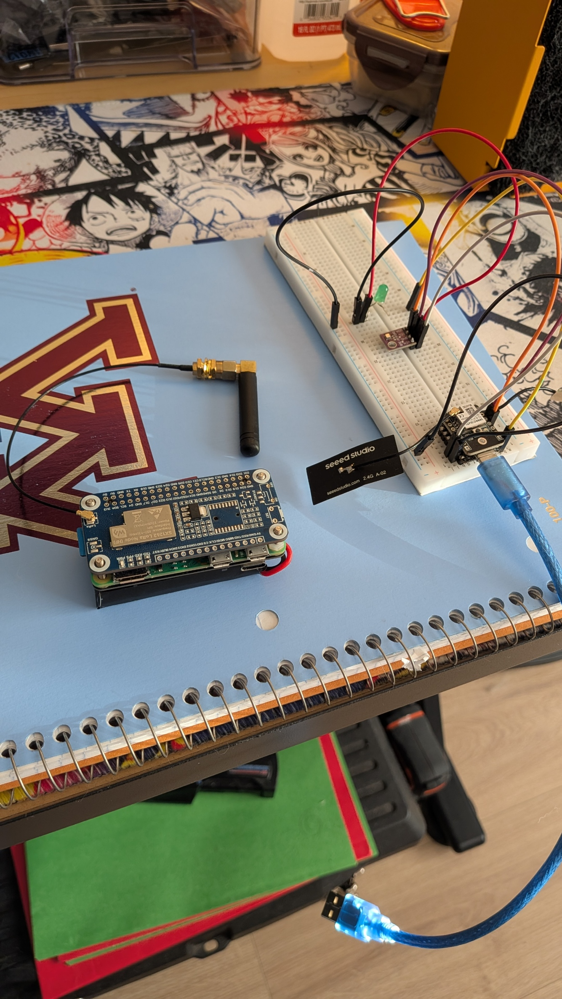

Welcome to my portfolio! Here you can view all my projects and planned work. Most of my projects involve Raspberry Pi's due to my current interest in them and with how versatile they are for various tech experiments.
1. Agricultural Soil Sensor
Description: Measures soil tempreture, moisture, Nitrogen, phosphorus, and potassium levels tom measure soil health. It uses a raspberry pi zero 2 w to receive data packets through LoRa communication from various soil sensors, it then puts that data into a database for analysis and querying.

2. Raspberry Pi Gadget Switcher